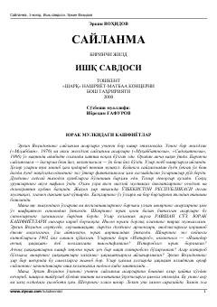

EVErkin Vohidovning yoshlik davri she'rlari jamlangan birinchi jild.
Mazkur asar taniqli o'zbek shoiri Erkin Vohidovning ko'p jildli сайланмасининг биринchi jildi bo'lib, "Ishq savdosi" deb nomlangan. Kitobga muallifning o'smirlik va yoshlik yillarida bitgan eng sara she'rlari hamda lirik kechinmalari jamlangan. Shuningdek, adabiyotshunos Ibrohim G'afurovning shoir ijodi va uning o'zbek she'riyatidagi o'rni haqidagi so'zboshi ham kiritilgan.